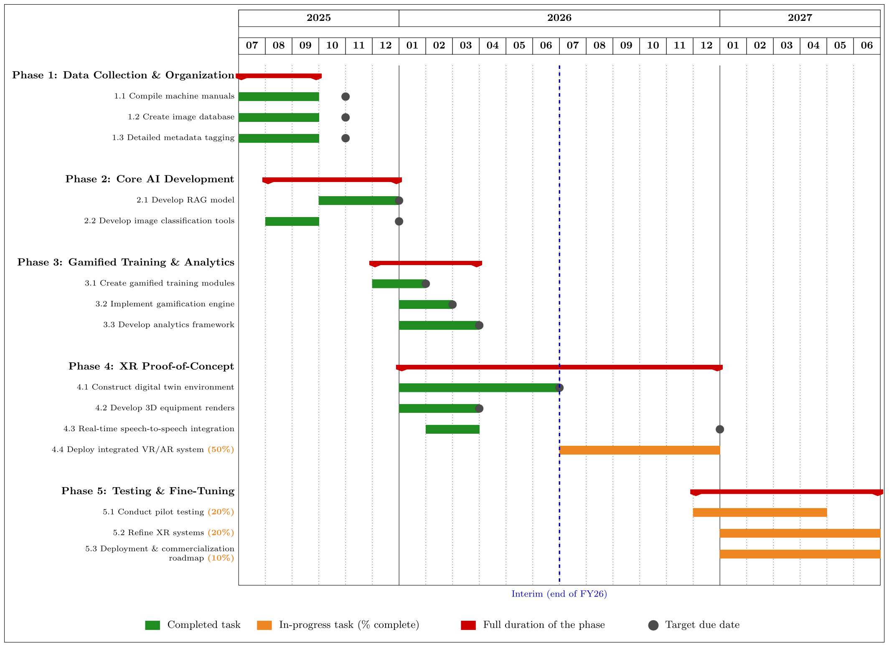
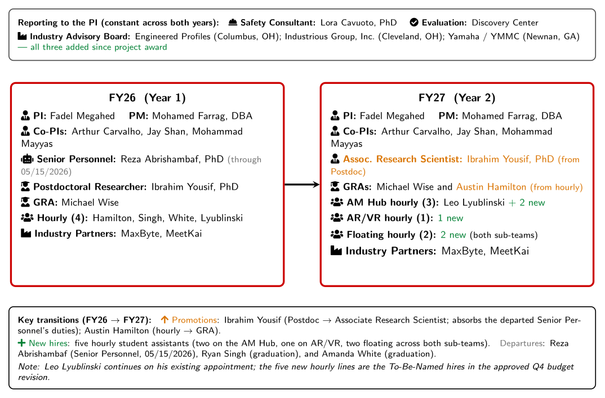
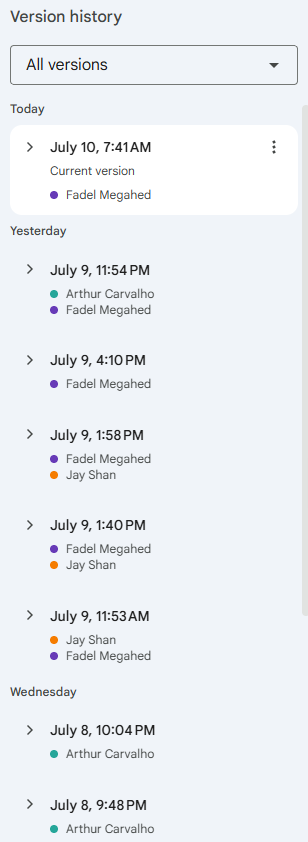
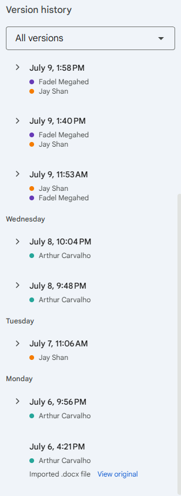
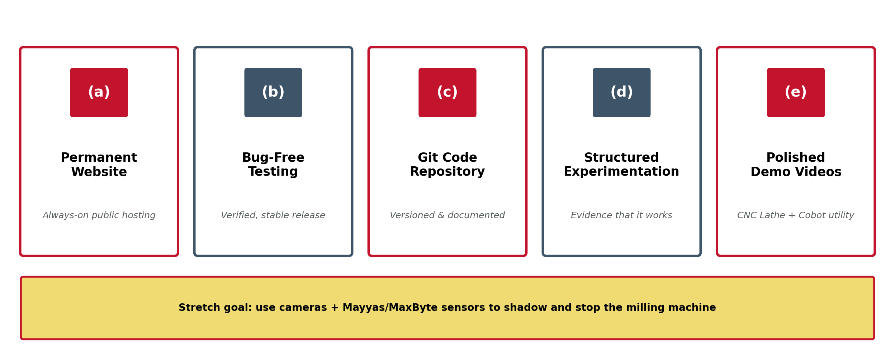
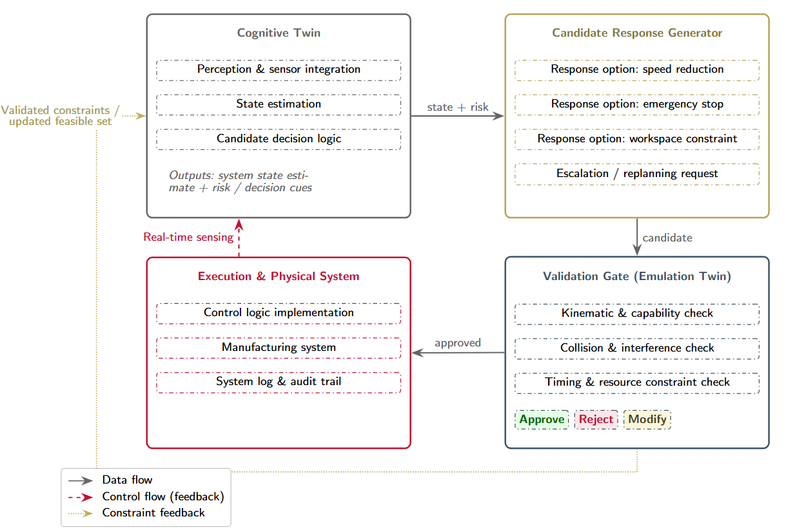
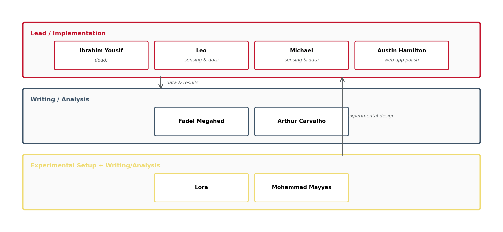

SIGHT: Safety Immersion and Gamified Hazard Training for Industry 5.0
Meeting 22: Year 1 Wrap-Up, Interim Report, WebVR & Digital-Twin Progress, and Partner Demos
July 10, 2026
Meeting Goals
Review and approve the Meeting 21 minutes, confirm attendance, and revisit prior action items.
Administrative Updates (Fadel + MU Team):
- FY27 hiring plan for five student workers.
- Year 2 purchases: Claude Code, Roboflow, cameras, and other needs.
- First-year evaluation update and lessons learned for Year 2 (Discovery Center).
- Status of the current Interim Progress Report (Deliverable 8.1, due Jul 17, 2026).
Technical Updates (MU and Lora):
- WebVR hosting, continuous improvement, and a request for expert feedback (Arthur).
- Consultant’s feedback on the current VR version (Lora).
- Digital twin progress and the Journal of Intelligent Manufacturing paper (AM Hub team).
Industry Partner Collaboration: MeetKai handoff (Andrea) and MaxByte AR demo (Naveen/Ram).
Risk mitigation / log updates and further discussion.
Recap: What We Covered in Meeting 21 (Jun 26)
🤝 Industry Handoffs
- MeetKai transferred all project assets (digital environment, assets, and code) to a MU GitHub repository.
- MaxByte demoed the autonomous pallet truck + AR live at the AM Hub.
📋 Administrative / BWC
- Q4 presentation delivered Jun 18; BWC approved all Q1–Q3 submissions.
- Interim (Full-Year) Report set for Jul 17, 2026.
⚙️ Technical Progress
- Digital twin: floor rendering matched to the physical AM Hub + Web VR; CNC modeling underway.
- Smart Safety Dashboard: human-presence detection, station-time tracking, PPE (hard-hat) monitoring, daily PDF/Excel reports.
📄 Dissemination
- NAMRC 54: chatbot paper presented (Fadel & Ibrahim).
- HICSS: long-context vs. RAG fast-track submission.
Action Items from Meeting 21
| Responsible Party | Action Item | Due Date | Status |
|---|---|---|---|
| Fadel / MU Team | Submit proof of Q4 attendance to BWC | Jun 2026 | Done |
| Kristen & Yue (Discovery Center) | Provide draft evaluation report for BWC inclusion | Jul 8–9, 2026 | Draft delivered |
| All Project Members | Review the Interim Report draft at this meeting | Jul 10, 2026 | In progress today |
| Fadel / MU Team | Submit Interim (Full-Year) Progress Report | Jul 17, 2026 | On track |
| Ibrahim | Establish shared version control (GitHub) for CV / UI / DT code | ASAP | In progress |
| Ibrahim / MU Team | Update digital avatars/assets to wear long pants (industrial compliance) | Next Phase | TBD |
| Ibrahim / Michael | Explore part tracking via YOLO for cycle-time / productivity metrics | Next Phase | TBD |
Meeting 21 Minutes
Administrative Updates
Fadel Megahed
Year 1 in the Books: Congratulations, and On to Year 2!

FY27 Hiring Plan: Five Student Workers

1 worker for AI updates · 3 for the AM Hub (2 supporting structured experimentation) · 1 TBD (MU Team).
Year 2 Purchases
- Claude Code: 6 subscriptions for Fadel, Arthur, Jay, Ibrahim, Austin, and 1 TBD student worker.
- Roboflow: annual subscription for Ibrahim (CV annotation and training).
- Cameras: for shop-floor monitoring and digital-twin sensing.
- Other identified needs: as they arise (Fadel and the MU Team).
💳 We now have our own grant P-card, in Fadel’s name, streamlining purchasing for the team.
Themes from the FY26 Evaluation (Discovery Center)
Interim Progress Report (1 of 6): Deliverable 8.1, Due Jul 17, 2026
Interim Report: Section Assignments & Contributions to Date
On Jul 6, Arthur assigned the 18 remaining sections and set a hard deadline of end of day, Thursday Jul 09, 2026.
I have been requesting these contributions for the past 2–3 meetings.
Today, each owner will walk us through their sections; anyone behind should commit to a submission date.
The document’s version history shows who has contributed so far →


Interim Report Sections — Fadel Megahed
4 sections
| Section | Status | Live Notes |
|---|---|---|
| 1. Project Schedule Status | ||
| 2. Total Percentage of Project Completion | ||
| 8. Administrative Status of Project | ||
| 9. Project Budget Status |
Interim Report Sections — Arthur Carvalho

4 sections
| Section | Status | Live Notes |
|---|---|---|
| 3. Project Overview | ||
| 13. Communications, Outreach & Dissemination | ||
| 14. Updated Communications Matrix | ||
| 17. Risk Management Log |
Interim Report Sections — Jay Shan

4 sections
| Section | Status | Live Notes |
|---|---|---|
| 4. Interim Activity Status | ||
| 5. Project Progress | ||
| 16. Action Plan | ||
| 20. Looking Ahead |
Interim Report Sections — Mohammad Mayyas
3 sections
| Section | Status | Live Notes |
|---|---|---|
| 11. Collaboration Efforts | ||
| 12. Commercialization Efforts | ||
| 18. Lessons Learned |
⏳ No edits yet in the document version history; please confirm a submission date.
Interim Report Sections — Ibrahim Yousif
3 sections
| Section | Status | Live Notes |
|---|---|---|
| 6. Technical Progress & Considerations | ||
| 7. Success Metrics | ||
| 15. Challenges |
⏳ No edits yet in the document version history; please confirm a submission date.
Technical Updates
Fadel Megahed and Ibrahim Yousif
WebVR: Continued Refinements — Arthur’s Contributions (1/2)
Context. Arthur inherited the VR codebase from MeetKai roughly three weeks ago. Since then he has (1) studied the codebase, (2) moved deployment to MU-controlled platforms, and (3) fixed many issues, putting us very close to a v1.0 that checks all the boxes we promised BWC.
- Removed unused items (Settings, Feedback, profile image); added an About page.
- Renamed bot to SIGHT bot; cleaned end-screen text and button ordering.
- Fixed Milling / Cobot / CNC wording, typos, and PPE tooltip text.
- Reworked auth: Google, email sign-in, and join flows.
- Sign-up collects name / email / password; Firebase identity carried into Unity.
- Cleaner sign-out reset; Firebase-specific forgot-password errors.
- Added Cloudflare Worker backend; Firebase UID as
player_id. - Upserts players into Google Cloud SQL / MySQL.
- Added DB documentation, ERD, and seed inserts.
WebVR: Continued Refinements — Arthur’s Contributions (2/2)
- Screenshot capture attached to each query: significantly better responses.
- New
/query_with_screenshotendpoint; conversation-ID reuse; rich-text formatting. - Manual TTS playback; upgraded model and improved SIGHT Bot instructions.
- Fixed WebGL MIME types,
.wasm/.datapaths, and build templates. - Monotonic loading bar; Google Analytics tag added.
- Hardened GitHub Actions / Cloudflare deploy (R2 rewriting, cache-busting).
- Rewrote main README (build, auth, deploy, analytics, Cloud SQL, AI API).
- Added AI and AI/API READMEs.
- Added a database README with schema and ERD explanations.
📋 Ask of the team: roughly 2–3 hours of meticulous testing. Feedback by Jul 17; first release planned for Jul 24. Format issues as “I saw [current], but it should be [correction].”
New Permanent Home for the VR Platform: sightvr.org
Permanent link: http://sightvr.org (replaces the MeetKai-hosted demo URL).
WebVR Feedback from Lora
Finalizing the Digital Twin Beyond the Proof-of-Concept Prototype

From May 01 Meeting: Digital Twin — Architecture

Closed-loop architecture targeted for the Journal of Intelligent Manufacturing submission: Cognitive Twin → Candidate Response Generator → Validation Gate (Emulation Twin) → Execution & Physical System.
From May 01 Meeting: Digital Twin — Current Paper Draft
From May 01 Meeting: Summer Team and Roles for the Digital Twin Paper

Industry Partner Collaboration
MeetKai and MaxByte
MeetKai: Thank You for an Excellent Handoff
A sincere thank you to the MeetKai team as they transition to other projects:
- ✅ Full handoff of the web-based VR platform.
- 📁 A detailed, well-documented repository (platforms, accounts, and code all captured).
- 🌟 Excellent work that put us within reach of a v1.0 release.
🎙️ Andrea: the floor is yours for any questions or comments for our team.
🤝
MaxByte: AR Demo Status
Discussion and Wrap Up | Open Floor
All Project Members
Technical Work Ahead
Upcoming BWC Deadlines
| Deliverable | Due Date | Status |
|---|---|---|
| Interim (Full-Year) Progress Report: Deliverable 8.1 | Jul 17, 2026 | Next up |
| July / August team meeting documents | Sep 11, 2026 | Upcoming |
| Q5 Quarterly Progress Report | Oct 09, 2026 | Scheduled |
| Digital Twin paper: Journal of Intelligent Manufacturing | TBD | Technical |
Contacts: Fadel Megahed (fmegahed@miamioh.edu) · Mohamed Farrag, PM (farragm2@miamioh.edu).
Updates to Risk and Risk Log
Based on our conversation, Arthur can update the risk log with any further updates.

Project funded by the Ohio BWC through their Worker Safety Innovation Center